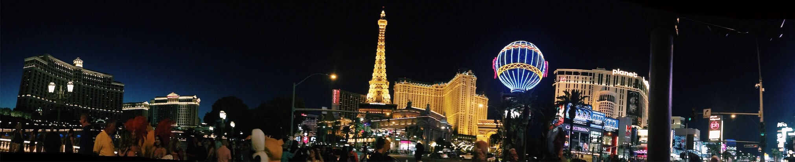

Run »Result Size: 705 x 677

several countries. out of all of them, my favorite country ever is mexico! it's beautiful, lively, and the perfect place for me.
<!DOCTYPE html>
<html>
<head>
  <title>jwalamitra's blog</title>
<link href="https://fonts.googleapis.com/css?family=Quicksand" rel="stylesheet">
  
<body style="background-color:black;">
  
    <center>
    
  <style>
body {margin:0;}

.topnav {
  overflow: hidden;
  background-color: #000;
}

  
.topnav a {
  float: left;
  display: block;
  color: #f2f2f2;
  text-align: center;
  padding: 14px 16px;
  text-decoration: none;
  font-size: 17px;
}

.topnav a:hover {
  background-color: #ddd;
  color: black;
}

.topnav a.active {
    background-color: #9B2954;
    color: white;
}
</style>
</head>
<body>
  <div class="topnav">
  <a class="active" href="#home">biography</a>
  <a href="https://jwalamitra.github.io/portfolio/lifestyle.html">lifestyle</a>
  <a href="#contact">contact</a>
</div>

<div style="padding-bottom:-10px">
  <h2>Top Navigation Example</h2>
  <p>Some content..</p>
</div>
  
  <center> 
  </center>
  
  <style>
body {
font-family: 'Quicksand', sans-serif;
}
</style>
<font color="white"><h2></h2></center>
<h2 style="text-align:center;">A PEEP INTO MY LIFE</h2>
<h3 style="text-align:center;">i enjoy travelling and photography so they're the perfect match for my excursions.</h3>
<h3 style="text-align:center;">i have been to several countries. out of all of them, my favorite country ever is mexico.</h3>
<h3 style="text-align:center;">it's beautiful, lively, and the perfect place for me.</h3>
<h3 style="text-align:center;">click on the tabs above to learn even more about me and my world!</h3>


<div style="text-align:center;"></div>
  div.className{
position:absolute;
margin-left: -250px; /* very important for the image to be centered */
left:50%;
bottom:0px;
}
  
</body>
</html>


